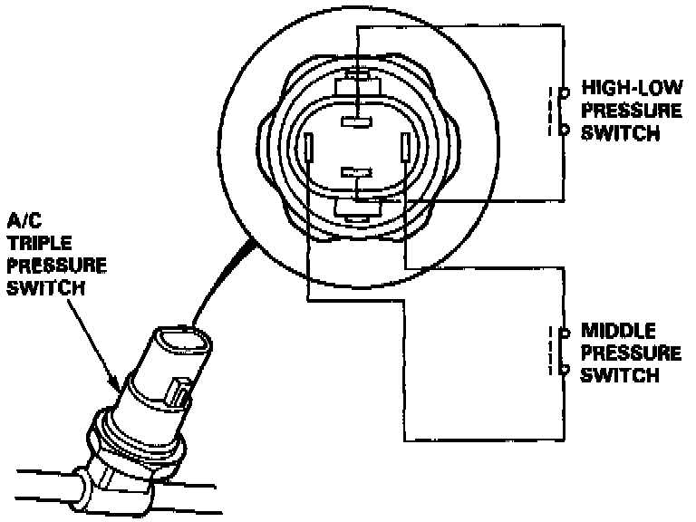
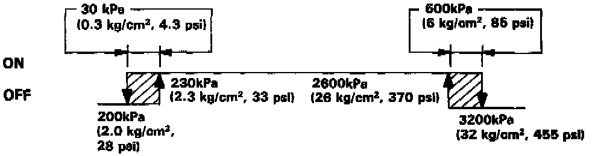
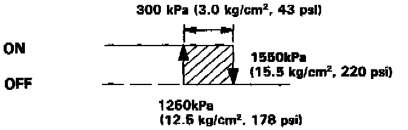

Refrigerant Pressure Sensor / Switch: Description and Operation

A/C TRIPLE PRESSURE SWITCH
The A/C triple pressure switch consists of a High-Low pressure switch (A/C pressure switch A) and a Middle pressure switch (A/C pressure switch B).

High-Low pressure switch
If the refrigerant pressure becomes too high (due to blockage), or too low (due to leakage), the A/C triple pressure switch sends a signal to the fan control unit to prevent the compressor from operating.

Middle pressure switch
If the refrigerant pressure goes above or below 1550 kPa (15.5 kg/cm2, 220 psi), the A/C triple pressure switch sends a signal to the fan control unit to change the speed of the condensor fan and radiator fan (High-Low).